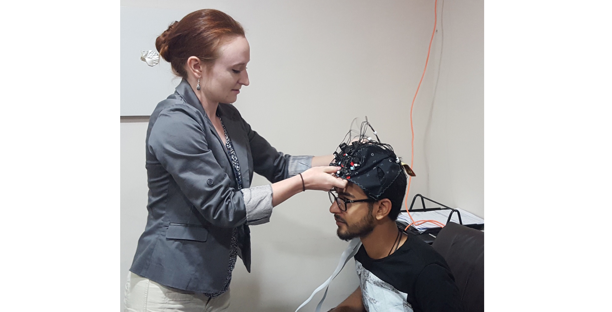
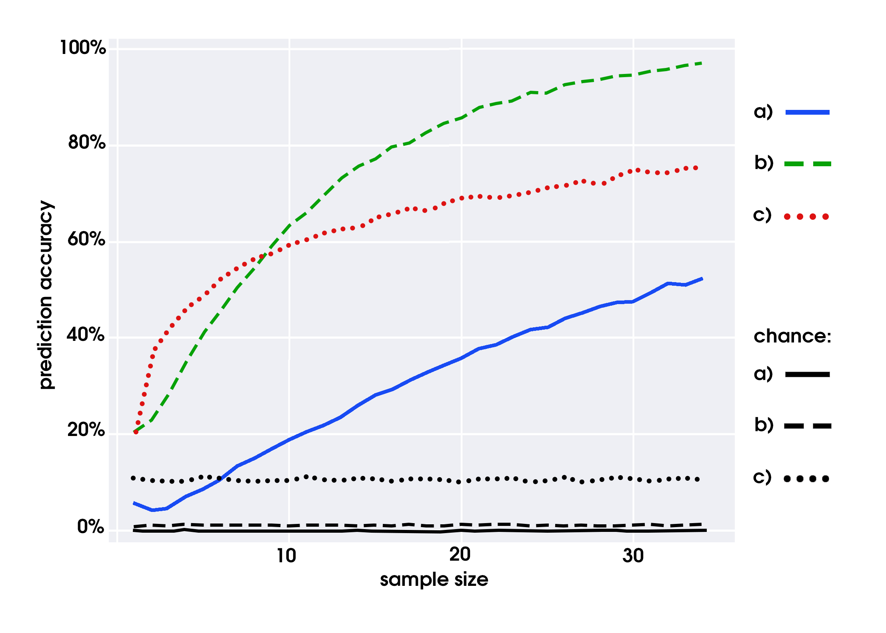

Cross-Cultural Persuasion Neuroscience

Working in the SCN lab at UCLA has been an awesome experience, with opportunities to do very exciting work in a diversity of contexts. In one of these sorts of projects starting in 2015, we joined a multi-year, cross-cultural collaboration in the Middle East aimed at extending the generalizability of social neuroscience research and evaluating the applicability of fNIRS neuroimaging for “field-based” neuroscience research.
This project was conducted in concert with Dr. Muniqth Dagher at the political research firm IIACSS and Dr. Ian McCulloh at Johns Hopkins University. Every summer, Ian and a few grad students from our lab would travel to Munqith’s offices in Amman, Jordan to collect fNIRS data from native Arab Jordanian participants.
 *When the office was closed over the weekend, admittedly it wasn’t hard to find other things to do.*
These were crazy cool research experiences - as neuroscientists, we don’t often get to say we travel the world to do field research! These trips were also exhausting whirlwinds, collecting data for at least 8 hours a day almost every day for two weeks straight, in order to finish an entire study in one visit. There were also moments of uncertainty or panic, as we had to learn the logistics of carrying sensitive neuroimaging equipment halfway around the world and orchestrating studies with participants who did not speak English.
So when the first paper from the project was published, it was very gratifying. This paper, published in the Journal for Personality & Social Psychology, evaluated how well persuasion neuroscience findings from American participant samples would replicate in our Jordanian participants.
Persuasion in Diverse Populations
The earlier work we aimed to replicate were findings that indicated the amount of activity in the medial prefrontal cortex (mPFC) while viewing a persuasive message predicts how likely a person is to be persuaded by that message. Yet this work has been limited by a lack of study sample diversity. Nearly all persuasion neuroscience research has been done with WEIRD participants - people from Western, educated, industrialized, rich, and democratic backgrounds. But WEIRD people are a small minority of the world population, so we need to expand who is included in neuroscience research if we want to make claims about all human brains.
In this study, participants viewed tv ads in Arabic with anti-smoking, family planning, and anti-violence messages. We recorded their prefrontal neural activity during this with a portable fNIRS unit, called a NirSport from NIRx. This unit was about the size of a thick textbook, and could record activity from the entire frontal cortex.
 During data collection in Amman
During data collection in Amman
After each video, participants rated A) how much they agreed with the ad, B) how much they identified with the message, C) how persuasive they thought the ad was, and D) how likely they were to change their behavior to fit the ad. This was a self-report measure of persuasion rather than a behavioral observation like in most persuasion neuroscience studies because we did not have the opportunity to collect delayed behavior data for this part (but that is a component we included in future studies in Jordan).
Our primary findings replicated the literature with American samples - activity in a large section of the prefrontal cortex including the mPFC was predictive of persuasiveness ratings. A smaller section of the dorsomedial prefrontal cortex was also related to ratings of identification with the message.
 *Areas of the prefrontal cortex in which activity during a video’s viewing was correlated with persuasiveness and identification ratings for that video. Color bar indicates the significance level.*
*Areas of the prefrontal cortex in which activity during a video’s viewing was correlated with persuasiveness and identification ratings for that video. Color bar indicates the significance level.*
We also replicated a more complex effect from the previous literature, which states that this relationship is stronger in people who have not already been exposed to the arguments in the persuasive messages or who did not already engage in the behavior the messages advocated for. We think this might be because the mPFC is involved in evaluating and intigrating new information into one’s self-schema. So if that evaluation process has already occurred at some point, mPFC activity is less likely to predict persuasion.
 *Areas of the prefrontal cortex in which activity during a video’s viewing was correlated with persuasiveness ratings, for arguments that the participants would already know about (targeted) or not know about (non-targeted). Black outline indicates the areas where activity predicted persuasion significantly more for non-targeted vs. targeted messages.*
*Areas of the prefrontal cortex in which activity during a video’s viewing was correlated with persuasiveness ratings, for arguments that the participants would already know about (targeted) or not know about (non-targeted). Black outline indicates the areas where activity predicted persuasion significantly more for non-targeted vs. targeted messages.*
Lastly, it was important to us that we evaluate how well we could use the brain as not just a predictor of individual persuasion, but as a signal of a message’s overall appeal to many people. This sort of analyses would tell us if, for example, fNIRS could be successfully used in pilot groups to determine which public health messages are more effective before spending a lot of money publicizing those messages. Here, we aggregated the brain activity over bootstrapped subsamples of our data many times, and used the averaged activity per message to predict the messages’ average persuasiveness rank.
Getting a good ranking of each and every message was hard to do this way, but a couple noteworthy results did stand out - A) we reached a 53% accuracy rate of predicting whether a message was in the most-persuasive, somewhat-persuasive, or least-persuasive tier; B) a 96% accuracy rate of predicting which were the top three messages; and C) a 75% accuracy of predicting the most persuasive message overall. Those numbers indicate fNIRS could be very valuable to an applied persuasion context. We additionally found that only a sample size of 7 was necessary to achieve results that were accurate for the best messages more often than not (>50% accuracy).
 *Accuracy of predicting which messages were most persuasive overall, by using aggregated neural activity as a metric. A) accuracy rates for predicting whether a message was very, somewhat, or not very persuasive; B) accuracy for predicting which three messages were the most persuasive; C) accuracy for predicting which single message was the most persuasive.*
The replications we got in this study were very encouraging. Persuasion processes tend to utilize social cognitive areas of the brain, which are known to exhibit differences in function between members of individualistic and collectivistic cultures. So knowing that the results in this Jordanian samples matches those of previous American samples gives us more confidence that this finding is generalizable across people.
Additionally, the predictions of overall message effectiveness make us more hopeful that fNIRS can be used for the applied purpose of predicting the effectiveness of specific future messages. This sort of population prediction based on aggregated brain data has been found in fMRI as well, but it is much more feasible to actually use fNIRS for such a purpose in the real world compared to fMRI.
So as far as Year 1 of the Jordan project goes (which honestly almost ended before it began when the TSA debated disallowing our equipment to be carried on the plane), I’d say it was a success. Can’t wait to show you what the next phases of the project bring in the near future!